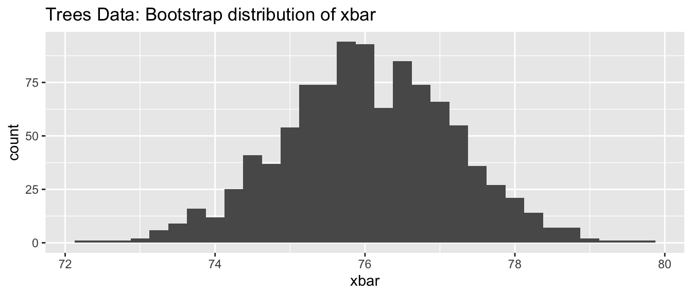
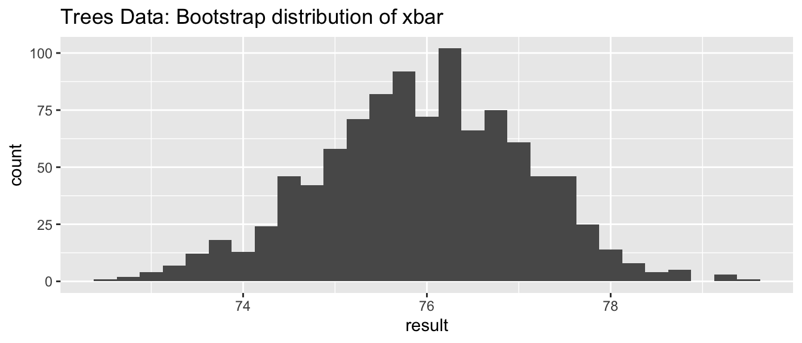
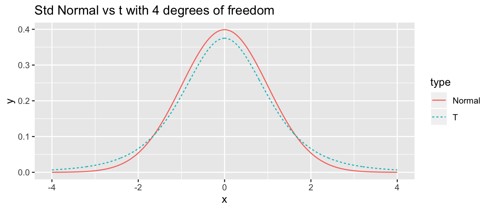

Chapter 6 Flow Control
library(tidyverse, quietly = TRUE) # loading ggplot2 and dplyrAs always, there is a Video Lecture that accompanies this chapter.
Often it is necessary to write scripts that perform different action depending on the data or to automate a task that must be repeated many times. To address these issues we will introduce the if statement and its closely related cousin if else. To address repeated tasks we will define two types of loops, a while loop and a for loop.
6.1 Logical Expressions
The most common logical expressions are the numerical expressions <, <=, ==, !=, >=, >. These are the usual logical comparisons from mathematics, with != being the not equal comparison. For any logical value or vector of values, the ! flips the logical values.
df <- data.frame(A=1:6, B=5:10)
df## A B
## 1 1 5
## 2 2 6
## 3 3 7
## 4 4 8
## 5 5 9
## 6 6 10df %>% mutate(`A==3?` = A == 3,
`A<=3?` = A <= 3,
`A!=3?` = A != 3,
`Flip Previous` = ! `A!=3?` )## A B A==3? A<=3? A!=3? Flip Previous
## 1 1 5 FALSE TRUE TRUE FALSE
## 2 2 6 FALSE TRUE TRUE FALSE
## 3 3 7 TRUE TRUE FALSE TRUE
## 4 4 8 FALSE FALSE TRUE FALSE
## 5 5 9 FALSE FALSE TRUE FALSE
## 6 6 10 FALSE FALSE TRUE FALSEI find that it is preferable to write logical comparisons using < or <= rather than the “greater than” versions because the number line is read left to right, so it is much easier to have the smaller value on the left.
df %>% mutate( `A < B` = A < B)## A B A < B
## 1 1 5 TRUE
## 2 2 6 TRUE
## 3 3 7 TRUE
## 4 4 8 TRUE
## 5 5 9 TRUE
## 6 6 10 TRUEIf we have two (or more) vectors of of logical values, we can do two pairwise operations. The “and” operator & will result in a TRUE value if all elements are TRUE. The “or” operator will result in a TRUE value if either the left hand side or right hand side is TRUE.
df %>% mutate(C = A>=0, D = A<=5) %>%
mutate( result1_and = C & D, # C and D both true
result2_and = A>=0 & A<=5, # directly calculated
result3_and = 0 <= A & A<=5, # more readable 0 <= A <= 5
result4_or = A<=0 | 5<=A) # A not in (0,5) range ## A B C D result1_and result2_and result3_and result4_or
## 1 1 5 TRUE TRUE TRUE TRUE TRUE FALSE
## 2 2 6 TRUE TRUE TRUE TRUE TRUE FALSE
## 3 3 7 TRUE TRUE TRUE TRUE TRUE FALSE
## 4 4 8 TRUE TRUE TRUE TRUE TRUE FALSE
## 5 5 9 TRUE TRUE TRUE TRUE TRUE TRUE
## 6 6 10 TRUE FALSE FALSE FALSE FALSE TRUENext we can summarize a vector of logical values using any(), all(), and which(). These functions do exactly what you would expect them to do.
any(6:10 <= 7 ) # Should return TRUE because there are two TRUE results## [1] TRUEall(6:10 <= 7 ) # Should return FALSE because there is at least one FALSE result## [1] FALSEwhich( 6:10 <= 7) # return the indices of the TRUE values## [1] 1 2Finally, I often need to figure out if a character string is in some set of values.
df <- data.frame( Type = rep(c('A','B','C','D'), each=2), Value=rnorm(8) )
df## Type Value
## 1 A -0.384094566
## 2 A -0.984740896
## 3 B -1.756983024
## 4 B 0.003044046
## 5 C 1.599202843
## 6 C 0.498389702
## 7 D -0.505485955
## 8 D -0.512469788# df %>% filter( Type == 'A' | Type == 'B' )
df %>% filter( Type %in% c('A','B') ) # Only rows with Type == 'A' or Type =='B'## Type Value
## 1 A -0.384094566
## 2 A -0.984740896
## 3 B -1.756983024
## 4 B 0.0030440466.2 Decision statements
6.2.1 In dplyr wrangling
A very common task within a data wrangling pipeline is to create a new column that recodes information in another column. Consider the following data frame that has name, gender, and political party affiliation of six individuals. In this example, we’ve coded male/female as 1/0 and political party as 1,2,3 for democratic, republican, and independent.
people <- data.frame(
name = c('Barack','Michelle', 'George', 'Laura', 'Bernie', 'Deborah'),
gender = c(1,0,1,0,1,0),
party = c(1,1,2,2,3,3)
)
people## name gender party
## 1 Barack 1 1
## 2 Michelle 0 1
## 3 George 1 2
## 4 Laura 0 2
## 5 Bernie 1 3
## 6 Deborah 0 3The command ifelse() works quite well within a dplyr::mutate() command and it responds correctly to vectors. The syntax is ifelse( logical.expression, TrueValue, FalseValue ).
people <- people %>%
mutate( gender2 = ifelse( gender == 0, 'Female', 'Male') )
people## name gender party gender2
## 1 Barack 1 1 Male
## 2 Michelle 0 1 Female
## 3 George 1 2 Male
## 4 Laura 0 2 Female
## 5 Bernie 1 3 Male
## 6 Deborah 0 3 FemaleTo do something similar for the case where we have 3 or more categories, we could use the ifelse() command repeatedly to address each category level separately. However because the ifelse command is limited to just two cases, it would be nice if there was a generalization to multiple categories. The dplyr::case_when function is that generalization. The syntax is case_when( logicalExpression1~Value1, logicalExpression2~Value2, ... ). We can have as many LogicalExpression ~ Value pairs as we want.
people <- people %>%
mutate( party2 = case_when( party == 1 ~ 'Democratic',
party == 2 ~ 'Republican',
party == 3 ~ 'Independent',
TRUE ~ 'None Stated' ) )
people## name gender party gender2 party2
## 1 Barack 1 1 Male Democratic
## 2 Michelle 0 1 Female Democratic
## 3 George 1 2 Male Republican
## 4 Laura 0 2 Female Republican
## 5 Bernie 1 3 Male Independent
## 6 Deborah 0 3 Female IndependentOften the last case is a catch all case where the logical expression will ALWAYS evaluate to TRUE and this is the value for all other input.
As another alternative to the problem of recoding factor levels, we could use the command forcats::fct_recode() function. See the Factors chapter in this book for more information about factors.
6.2.2 General if else
While programming, I often need to perform expressions that are more complicated than what the ifelse() command can do. The general format of an if or and if else is presented here.
# Simplest version
if( logical.test ){
expression # can be many lines of code
}
# Including the optional else
if( logical.test ){
expression
}else{
expression
}where the else part is optional.
Suppose that I have a piece of code that generates a random variable from the Binomial distribution with one sample (essentially just flipping a coin) but I’d like to label it head or tails instead of one or zero.
What is happening is that the test expression inside the if() is evaluated and if it is true, then the subsequent statement is executed. If the test expression is false, the next statement is skipped. The way the R language is defined, only the first statement after the if statement is executed (or skipped) depending on the test expression. If we want multiple statements to be executed (or skipped), we will wrap those expressions in curly brackets { }. I find it easier to follow the if else logic when I see the curly brackets so I use them even when there is only one expression to be executed. Also notice that the RStudio editor indents the code that might be skipped to try help give you a hint that it will be conditionally evaluated.
# Flip the coin, and we get a 0 or 1
result <- rbinom(n=1, size=1, prob=0.5)
result## [1] 0# convert the 0/1 to Tail/Head
if( result == 0 ){
result <- 'Tail'
print(" in the if statement, got a Tail! ")
}else{
result <- 'Head'
print("In the else part!")
}## [1] " in the if statement, got a Tail! "result## [1] "Tail"Run this code several times until you get both cases several times. Notice that in the Environment tab in RStudio, the value of the variable result changes as you execute the code repeatedly.
To provide a more statistically interesting example of when we might use an if else statement, consider the calculation of a p-value in a 1-sample t-test with a two-sided alternative. Recall the calculate was:
If the test statistic t is negative, then p-value = \(2*P\left(T_{df} \le t \right)\)
If the test statistic t is positive, then p-value = \(2*P\left(T_{df} \ge t \right)\).
# create some fake data
n <- 20 # suppose this had a sample size of 20
x <- rnorm(n, mean=2, sd=1)
# testing H0: mu = 0 vs Ha: mu =/= 0
t <- ( mean(x) - 0 ) / ( sd(x)/sqrt(n) )
df <- n-1
if( t < 0 ){
p.value <- 2 * pt(t, df)
}else{
p.value <- 2 * (1 - pt(t, df))
}
# print the resulting p-value
p.value## [1] 7.453989e-10This sort of logic is necessary for the calculation of p-values and so something similar is found somewhere inside the t.test() function.
Finally we can nest if else statements together to allow you to write code that has many different execution routes.
# randomly grab a number between 0,5 and round it up to 1,2, ..., 5
birth.order <- ceiling( runif(1, 0,5) )
if( birth.order == 1 ){
print('The first child had more rules to follow')
}else if( birth.order == 2 ){
print('The second child was ignored')
}else if( birth.order == 3 ){
print('The third child was spoiled')
}else{
# if birth.order is anything other than 1, 2 or 3
print('No more unfounded generalizations!')
}## [1] "The first child had more rules to follow"6.3 Loops
It is often desirable to write code that does the same thing over and over, relieving you of the burden of repetitive tasks. To do this we’ll need a way to tell the computer to repeat some section of code over and over. However we’ll usually want something small to change each time through the loop and some way to tell the computer how many times to run the loop or when to stop repeating.
6.3.1 while Loops
The basic form of a while loop is as follows:
# while loop with multiple lines to be repeated
while( logical.test ){
expression1 # multiple lines of R code
expression2
}The computer will first evaluate the test expression. If it is true, it will execute the code once. It will then evaluate the test expression again to see if it is still true, and if so it will execute the code section a third time. The computer will continue with this process until the test expression finally evaluates as false.
while( x < 100 ){
print( paste("In loop and x is now:", x) ) # print out current value of x
x <- 2*x
}## Warning in while (x < 100) {: the condition has length > 1 and only the first
## element will be used## [1] "In loop and x is now: 1.67028844627917"
## [2] "In loop and x is now: 0.98397770852988"
## [3] "In loop and x is now: 1.87980007558148"
## [4] "In loop and x is now: 1.27353101965472"
## [5] "In loop and x is now: 2.73194396262364"
## [6] "In loop and x is now: 2.38122232698375"
## [7] "In loop and x is now: 2.83523716728757"
## [8] "In loop and x is now: 3.85581590524167"
## [9] "In loop and x is now: 3.34222424449003"
## [10] "In loop and x is now: 2.24422198541099"
## [11] "In loop and x is now: 1.49182096886733"
## [12] "In loop and x is now: 1.68135380542081"
## [13] "In loop and x is now: 0.880084816957307"
## [14] "In loop and x is now: 1.39378063550916"
## [15] "In loop and x is now: 3.44435418162452"
## [16] "In loop and x is now: 1.88668910485114"
## [17] "In loop and x is now: 1.79119691627079"
## [18] "In loop and x is now: 1.64121363898489"
## [19] "In loop and x is now: 2.69879420711938"
## [20] "In loop and x is now: 1.66858195261478"## Warning in while (x < 100) {: the condition has length > 1 and only the first
## element will be used## [1] "In loop and x is now: 3.34057689255834"
## [2] "In loop and x is now: 1.96795541705976"
## [3] "In loop and x is now: 3.75960015116297"
## [4] "In loop and x is now: 2.54706203930944"
## [5] "In loop and x is now: 5.46388792524728"
## [6] "In loop and x is now: 4.7624446539675"
## [7] "In loop and x is now: 5.67047433457515"
## [8] "In loop and x is now: 7.71163181048335"
## [9] "In loop and x is now: 6.68444848898005"
## [10] "In loop and x is now: 4.48844397082198"
## [11] "In loop and x is now: 2.98364193773467"
## [12] "In loop and x is now: 3.36270761084163"
## [13] "In loop and x is now: 1.76016963391461"
## [14] "In loop and x is now: 2.78756127101833"
## [15] "In loop and x is now: 6.88870836324905"
## [16] "In loop and x is now: 3.77337820970229"
## [17] "In loop and x is now: 3.58239383254158"
## [18] "In loop and x is now: 3.28242727796978"
## [19] "In loop and x is now: 5.39758841423877"
## [20] "In loop and x is now: 3.33716390522956"## Warning in while (x < 100) {: the condition has length > 1 and only the first
## element will be used## [1] "In loop and x is now: 6.68115378511668"
## [2] "In loop and x is now: 3.93591083411952"
## [3] "In loop and x is now: 7.51920030232593"
## [4] "In loop and x is now: 5.09412407861888"
## [5] "In loop and x is now: 10.9277758504946"
## [6] "In loop and x is now: 9.52488930793499"
## [7] "In loop and x is now: 11.3409486691503"
## [8] "In loop and x is now: 15.4232636209667"
## [9] "In loop and x is now: 13.3688969779601"
## [10] "In loop and x is now: 8.97688794164396"
## [11] "In loop and x is now: 5.96728387546934"
## [12] "In loop and x is now: 6.72541522168325"
## [13] "In loop and x is now: 3.52033926782923"
## [14] "In loop and x is now: 5.57512254203665"
## [15] "In loop and x is now: 13.7774167264981"
## [16] "In loop and x is now: 7.54675641940458"
## [17] "In loop and x is now: 7.16478766508317"
## [18] "In loop and x is now: 6.56485455593956"
## [19] "In loop and x is now: 10.7951768284775"
## [20] "In loop and x is now: 6.67432781045911"## Warning in while (x < 100) {: the condition has length > 1 and only the first
## element will be used## [1] "In loop and x is now: 13.3623075702334"
## [2] "In loop and x is now: 7.87182166823904"
## [3] "In loop and x is now: 15.0384006046519"
## [4] "In loop and x is now: 10.1882481572378"
## [5] "In loop and x is now: 21.8555517009891"
## [6] "In loop and x is now: 19.04977861587"
## [7] "In loop and x is now: 22.6818973383006"
## [8] "In loop and x is now: 30.8465272419334"
## [9] "In loop and x is now: 26.7377939559202"
## [10] "In loop and x is now: 17.9537758832879"
## [11] "In loop and x is now: 11.9345677509387"
## [12] "In loop and x is now: 13.4508304433665"
## [13] "In loop and x is now: 7.04067853565846"
## [14] "In loop and x is now: 11.1502450840733"
## [15] "In loop and x is now: 27.5548334529962"
## [16] "In loop and x is now: 15.0935128388092"
## [17] "In loop and x is now: 14.3295753301663"
## [18] "In loop and x is now: 13.1297091118791"
## [19] "In loop and x is now: 21.5903536569551"
## [20] "In loop and x is now: 13.3486556209182"## Warning in while (x < 100) {: the condition has length > 1 and only the first
## element will be used## [1] "In loop and x is now: 26.7246151404667"
## [2] "In loop and x is now: 15.7436433364781"
## [3] "In loop and x is now: 30.0768012093037"
## [4] "In loop and x is now: 20.3764963144755"
## [5] "In loop and x is now: 43.7111034019782"
## [6] "In loop and x is now: 38.09955723174"
## [7] "In loop and x is now: 45.3637946766012"
## [8] "In loop and x is now: 61.6930544838668"
## [9] "In loop and x is now: 53.4755879118404"
## [10] "In loop and x is now: 35.9075517665758"
## [11] "In loop and x is now: 23.8691355018773"
## [12] "In loop and x is now: 26.901660886733"
## [13] "In loop and x is now: 14.0813570713169"
## [14] "In loop and x is now: 22.3004901681466"
## [15] "In loop and x is now: 55.1096669059924"
## [16] "In loop and x is now: 30.1870256776183"
## [17] "In loop and x is now: 28.6591506603327"
## [18] "In loop and x is now: 26.2594182237582"
## [19] "In loop and x is now: 43.1807073139102"
## [20] "In loop and x is now: 26.6973112418365"## Warning in while (x < 100) {: the condition has length > 1 and only the first
## element will be used## [1] "In loop and x is now: 53.4492302809334"
## [2] "In loop and x is now: 31.4872866729561"
## [3] "In loop and x is now: 60.1536024186075"
## [4] "In loop and x is now: 40.752992628951"
## [5] "In loop and x is now: 87.4222068039565"
## [6] "In loop and x is now: 76.19911446348"
## [7] "In loop and x is now: 90.7275893532023"
## [8] "In loop and x is now: 123.386108967734"
## [9] "In loop and x is now: 106.951175823681"
## [10] "In loop and x is now: 71.8151035331517"
## [11] "In loop and x is now: 47.7382710037547"
## [12] "In loop and x is now: 53.803321773466"
## [13] "In loop and x is now: 28.1627141426338"
## [14] "In loop and x is now: 44.6009803362932"
## [15] "In loop and x is now: 110.219333811985"
## [16] "In loop and x is now: 60.3740513552366"
## [17] "In loop and x is now: 57.3183013206654"
## [18] "In loop and x is now: 52.5188364475165"
## [19] "In loop and x is now: 86.3614146278203"
## [20] "In loop and x is now: 53.3946224836729"## Warning in while (x < 100) {: the condition has length > 1 and only the first
## element will be usedIt is very common to forget to update the variable used in the test expression. In that case the test expression will never be false and the computer will never stop. This unfortunate situation is called an infinite loop.
# Example of an infinite loop! Do not Run!
x <- 1
while( x < 10 ){
print(x)
}6.3.2 for Loops
Often we know ahead of time exactly how many times we should go through the loop. We could use a while loop, but there is also a second construct called a for loop that is quite useful.
The format of a for loop is as follows:
for( index in vector ){
expression1
expression2
}where the index variable will take on each value in vector in succession and then statement will be evaluated. As always, statement can be multiple statements wrapped in curly brackets {}.
for( i in 1:5 ){
print( paste("In the loop and current value is i =", i) )
}## [1] "In the loop and current value is i = 1"
## [1] "In the loop and current value is i = 2"
## [1] "In the loop and current value is i = 3"
## [1] "In the loop and current value is i = 4"
## [1] "In the loop and current value is i = 5"What is happening is that i starts out as the first element of the vector c(1,2,3,4,5), in this case, i starts out as 1. After i is assigned, the statements in the curly brackets are then evaluated. Once we get to the end of those statements, i is reassigned to the next element of the vector c(1,2,3,4,5). This process is repeated until i has been assigned to each element of the given vector. It is somewhat traditional to use i and j and the index variables, but they could be anything.
While the recipe above is the minimal definition of a for loop, there is often a bit more set up to create a result vector or data frame that will store the steps of the for loop.
N <- 10
result <- NULL # Make a place to store each step of the for loop
for( i in 1:N ){
# Perhaps some code that calculates something
result[i] <- # something
}We can use this loop to calculate the first \(10\) elements of the Fibonacci sequence. Recall that the Fibonacci sequence is defined by \(F_{n}=F_{n-1}+F_{n-2}\) where \(F_{1}=0\) and \(F_{2}=1\).
N <- 10 # How many Fibonacci numbers to create
F <- rep(0, N) # initialize a vector of zeros
F[1] <- 0 # F[1] should be zero
F[2] <- 1 # F[2] should be 1
print(F) # Show the value of F before the loop ## [1] 0 1 0 0 0 0 0 0 0 0for( n in 3:N ){
F[n] <- F[n-1] + F[n-2] # define based on the prior two values
print(F) # show F at each step of the loop
}## [1] 0 1 1 0 0 0 0 0 0 0
## [1] 0 1 1 2 0 0 0 0 0 0
## [1] 0 1 1 2 3 0 0 0 0 0
## [1] 0 1 1 2 3 5 0 0 0 0
## [1] 0 1 1 2 3 5 8 0 0 0
## [1] 0 1 1 2 3 5 8 13 0 0
## [1] 0 1 1 2 3 5 8 13 21 0
## [1] 0 1 1 2 3 5 8 13 21 34For a more statistical case where we might want to perform a loop, we can consider the creation of the bootstrap estimate of a sampling distribution. The bootstrap distribution is created by repeatedly re-sampling with replacement from our original sample data, running the analysis for each re-sample, and then saving the statistic of interest.
library(dplyr)
library(ggplot2)
# bootstrap from the trees dataset.
SampDist <- data.frame(xbar=NULL) # Make a data frame to store the means
for( i in 1:1000 ){
## Do some stuff
boot.data <- trees %>% dplyr::sample_frac(replace=TRUE)
boot.stat <- boot.data %>% dplyr::summarise(xbar=mean(Height)) # 1x1 data frame
## Save the result as a new row in the output data frame
SampDist <- rbind( SampDist, boot.stat )
}
# Check out the structure of the result
str(SampDist)## 'data.frame': 1000 obs. of 1 variable:
## $ xbar: num 74.5 76 76.8 74.9 74.1 ...# Plot the output
ggplot(SampDist, aes(x=xbar)) +
geom_histogram( binwidth=0.25) +
labs(title='Trees Data: Bootstrap distribution of xbar')
6.3.3 mosaic::do() loops
Many times when using a for loop, we want to save some quantity for each pass through the for loop. Because this is such a common tasks, the mosaic::do() function automates the creation of the output data frame and the saving each repetition. This function is intended to hide the coding steps that often trips up new programmers.
# Same Loop
SampDist <- mosaic::do(1000) * {
trees %>% dplyr::sample_frac(replace=TRUE) %>%
dplyr::summarise(xbar=mean(Height)) %>% # 1x1 data frame
pull(xbar) # Scalar
}
# Structure of the SampDist object
str(SampDist)## Classes 'do.data.frame' and 'data.frame': 1000 obs. of 1 variable:
## $ result: num 74.9 75.3 76.9 75.6 77.3 ...
## - attr(*, "lazy")=Class 'formula' language ~{ trees %>% dplyr::sample_frac(replace = TRUE) %>% dplyr::summarise(xbar = mean(Height)) %>% ...
## .. ..- attr(*, ".Environment")=<environment: R_GlobalEnv>
## - attr(*, "culler")=function (object, ...)# Plot the output
ggplot(SampDist, aes(x=result)) +
geom_histogram( binwidth=0.25) +
labs(title='Trees Data: Bootstrap distribution of xbar')
6.4 Functions
It is very important to be able to define a piece of programming logic that is repeated often. For example, I don’t want to have to always program the mathematical code for calculating the sample variance of a vector of data. Instead I just want to call a function that does everything for me and I don’t have to worry about the details.
While hiding the computational details is nice, fundamentally writing functions allows us to think about our problems at a higher layer of abstraction. For example, most scientists just want to run a t-test on their data and get the appropriate p-value out; they want to focus on their problem and not how to calculate what the appropriate degrees of freedom are. Another statistical example where functions are important is a bootstrap data analysis where we need to define a function that calculates whatever statistic the research cares about.
The format for defining your own function is
function.name <- function(arg1, arg2, arg3){
statement1
statement2
}where arg1 is the first argument passed to the function and arg2 is the second.
To illustrate how to define your own function, we will define a variance calculating function.
# define my function
my.var <- function(x){
n <- length(x) # calculate sample size
xbar <- mean(x) # calculate sample mean
SSE <- sum( (x-xbar)^2 ) # calculate sum of squared error
v <- SSE / ( n - 1 ) # "average" squared error
return(v) # result of function is v
}# create a vector that I wish to calculate the variance of
test.vector <- c(1,2,2,4,5)
# calculate the variance using my function
calculated.var <- my.var( test.vector )
calculated.var## [1] 2.7Notice that even though I defined my function using x as my vector of data, and passed my function something named test.vector, R does the appropriate renaming. If my function doesn’t modify its input arguments, then R just passes a pointer to the inputs to avoid copying large amounts of data when you call a function. If your function modifies its input, then R will take the input data, copy it, and then pass that new copy to the function. This means that a function cannot modify its arguments. In Computer Science parlance, R does not allow for procedural side effects. Think of the variable x as a placeholder, with it being replaced by whatever gets passed into the function.
When I call a function, the function might cause something to happen (e.g. draw a plot) or it might do some calculates the result is returned by the function and we might want to save that. Inside a function, if I want the result of some calculation saved, I return the result as the output of the function. The way I specify to do this is via the return statement. (Actually R doesn’t completely require this. But the alternative method is less intuitive and I strongly recommend using the return() statement for readability.)
By writing a function, I can use the same chunk of code repeatedly. This means that I can do all my tedious calculations inside the function and just call the function whenever I want and happily ignore the details. Consider the function t.test() which we have used to do all the calculations in a t-test. We could write a similar function using the following code:
# define my function
one.sample.t.test <- function(input.data, mu0){
n <- length(input.data)
xbar <- mean(input.data)
s <- sd(input.data)
t <- (xbar - mu0)/(s / sqrt(n))
if( t < 0 ){
p.value <- 2 * pt(t, df=n-1)
}else{
p.value <- 2 * (1-pt(t, df=n-1))
}
# we haven't addressed how to print things in a organized
# fashion, the following is ugly, but works...
# Notice that this function returns a character string
# with the necessary information in the string.
return( paste('t =', round(t, digits=3), ' and p.value =', round(p.value, 3)) )
}# create a vector that I wish apply a one-sample t-test on.
test.data <- c(1,2,2,4,5,4,3,2,3,2,4,5,6)
one.sample.t.test( test.data, mu0=2 )## [1] "t = 3.157 and p.value = 0.008"Nearly every function we use to do data analysis is written in a similar fashion. Somebody decided it would be convenient to have a function that did an ANOVA analysis and they wrote something similar to the above function, but is a bit grander in scope. Even if you don’t end up writing any of your own functions, knowing how to will help you understand why certain functions you use are designed the way they are.
6.5 Exercises
I’ve created a dataset about presidential candidates for the 2020 US election and it is available on the github website for my STA 141
prez <- readr::read_csv('https://raw.githubusercontent.com/dereksonderegger/444/master/data-raw/Prez_Candidate_Birthdays') prez## # A tibble: 11 x 5 ## Candidate Gender Birthday Party AgeOnElection ## <chr> <chr> <date> <chr> <dbl> ## 1 Pete Buttigieg M 1982-01-19 D 38 ## 2 Andrew Yang M 1975-01-13 D 45 ## 3 Juilan Castro M 1976-09-16 D 44 ## 4 Beto O'Rourke M 1972-09-26 D 48 ## 5 Cory Booker M 1969-04-27 D 51 ## 6 Kamala Harris F 1964-10-20 D 56 ## 7 Amy Klobucher F 1960-05-25 D 60 ## 8 Elizabeth Warren F 1949-06-22 D 71 ## 9 Donald Trump M 1946-06-14 R 74 ## 10 Joe Biden M 1942-11-20 D 77 ## 11 Bernie Sanders M 1941-09-08 D 79- Re-code the Gender column to have Male and Female levels. Similarly convert the party variable to be Democratic or Republican.
- Bernie Sanders was registered as an Independent up until his 2016 presidential run. Change his political party value into ‘Independent’.
The \(Uniform\left(a,b\right)\) distribution is defined on x \(\in [a,b]\) and represents a random variable that takes on any value of between
aandbwith equal probability. Technically since there are an infinite number of values betweenaandb, each value has a probability of 0 of being selected and I should say each interval of width \(d\) has equal probability. It has the density function \[f\left(x\right)=\begin{cases} \frac{1}{b-a} & \;\;\;\;a\le x\le b\\ 0 & \;\;\;\;\textrm{otherwise} \end{cases}\]The R function
dunif()evaluates this density function for the above defined values of x, a, and b. Somewhere in that function, there is a chunk of code that evaluates the density for arbitrary values of \(x\). Run this code a few times and notice sometimes the result is \(0\) and sometimes it is \(1/(10-4)=0.16666667\).a <- 4 # The min and max values we will use for this example b <- 10 # Could be anything, but we need to pick something x <- runif(n=1, 0,10) # one random value between 0 and 10 # what is value of f(x) at the randomly selected x value? dunif(x, a, b)## [1] 0We will write a sequence of statements that utilizes an if statements to appropriately calculate the density of x assuming that
a,b, andxare given to you, but your code won’t know ifxis betweenaandb. That is, your code needs to figure out if it is and give either1/(b-a)or0.We could write a set of if/else statements
a <- 4 b <- 10 x <- runif(n=1, 0,10) # one random value between 0 and 10 if( x < a ){ result <- ??? }else if( x <= b ){ result <- ??? }else{ result <- ??? } print(paste('x=',round(x,digits=3), ' result=', round(result,digits=3)))Replace the
???with the appropriate value, either 0 or \(1/\left(b-a\right)\). Run the code repeatedly until you are certain that it is calculating the correct density value.We could perform the logical comparison all in one comparison. Recall that we can use
&to mean “and” and|to mean “or”. In the following two code chunks, replace the???with either&or|to make the appropriate result.x <- runif(n=1, 0,10) # one random value between 0 and 10 if( (a<=x) ??? (x<=b) ){ result <- 1/(b-a) }else{ result <- 0 } print(paste('x=',round(x,digits=3), ' result=', round(result,digits=3)))x <- runif(n=1, 0,10) # one random value between 0 and 10 if( (x<a) ??? (b<x) ){ result <- 0 }else{ result <- 1/(b-a) } print(paste('x=',round(x,digits=3), ' result=', round(result,digits=3)))x <- runif(n=1, 0,10) # one random value between 0 and 10 result <- ifelse( a<x & x<b, ???, ??? ) print(paste('x=',round(x,digits=3), ' result=', round(result,digits=3)))
I often want to repeat some section of code some number of times. For example, I might want to create a bunch plots that compare the density of a t-distribution with specified degrees of freedom to a standard normal distribution.
library(ggplot2) df <- 4 N <- 1000 x.grid <- seq(-4, 4, length=N) data <- data.frame( x = c(x.grid, x.grid), y = c(dnorm(x.grid), dt(x.grid, df)), type = c( rep('Normal',N), rep('T',N) ) ) # make a nice graph myplot <- ggplot(data, aes(x=x, y=y, color=type, linetype=type)) + geom_line() + labs(title = paste('Std Normal vs t with', df, 'degrees of freedom')) # actually print the nice graph we made print(myplot)
Use a
forloop to create similar graphs for degrees of freedom \(2,3,4,\dots,29,30\).In retrospect, perhaps we didn’t need to produce all of those. Rewrite your loop so that we only produce graphs for \(\left\{ 2,3,4,5,10,15,20,25,30\right\}\) degrees of freedom. Hint: you can just modify the vector in the
forstatement to include the desired degrees of freedom.